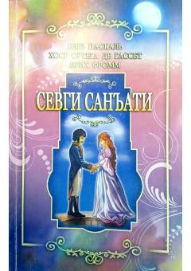

SSSevgi tuyg'usining ilmiy-falsafiy va amaliy asoslarini ochib beruvchi mashhur asar.
Ushbu kitob sevgi tuyg'usini shunchaki tasodifiy hissiyot emas, balki bilim, amaliyot va yetuklikni talab qiluvchi san'at sifatida o'rganadi. Muallif jamiyatdagi noto'g'ri qarashlarni tahlil qilib, chinakam muhabbatning mohiyati va uning inson hayotidagi o'rnini ochib beradi.